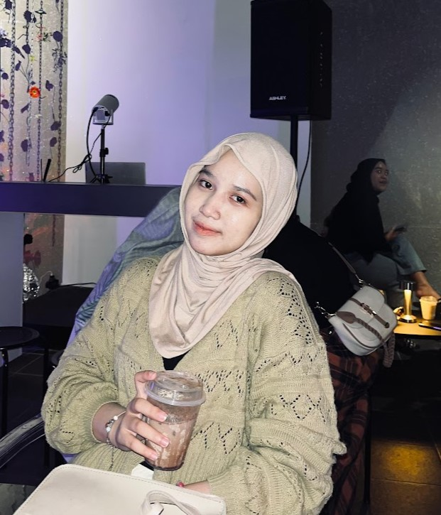

Nasywa Aurelia Yuandra
NIM: 23/514952/SV/22444
Program Studi: Sistem Informasi Geografis
Universitas: Universitas Gadjah Mada
Angkatan: 2023
Kontak
Email: nasywaaureliayuandra@mail.ugm.ac.id
NIM: 23/514952/SV/22444
Program Studi: Sistem Informasi Geografis
Universitas: Universitas Gadjah Mada
Angkatan: 2023
Email: nasywaaureliayuandra@mail.ugm.ac.id